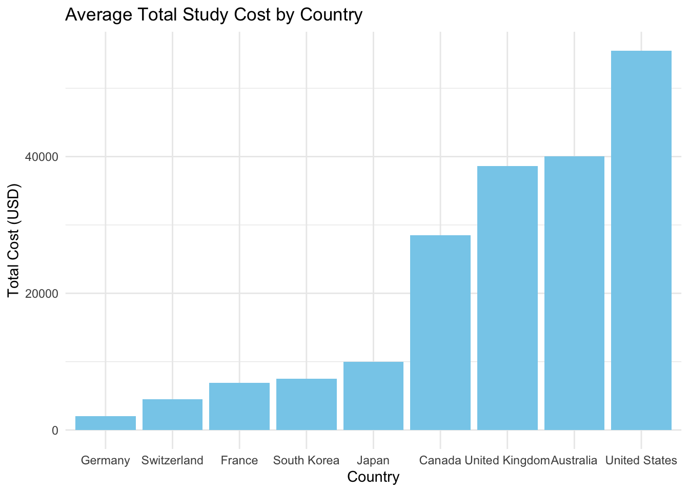

Analysis of International Education Costs vs. University Rankings
0.1 Executive Summary
This study investigates the relationship between actual study abroad costs and international university rankings. We compare academic achievement with financial affordability across major study destinations using data from the 2024 and 2025 QS World University Rankings and international education cost datasets. The analysis focuses on master’s degree programs in the top 10 QS ranking countries, examining tuition, living costs, visa fees, and insurance expenses. The findings reveal significant cost variations among top-ranking countries, providing valuable insights for international students seeking quality education at optimal costs.
0.2 Introduction
The international education sector is growing rapidly, with more students exploring study opportunities beyond their home countries in search of both quality and affordability. The QS World University Rankings serve as a trusted benchmark for comparing institutions across dimensions such as academic reputation, graduate employability, and sustainability. While top-ranked universities typically involve higher costs, the total expense varies significantly between countries due to differences in living costs, visa requirements, and local economic conditions. Expenses like tuition, accommodation, visa fees, and insurance can significantly impact overall affordability for international students.
For many prospective students, cost considerations are just as critical as academic quality when making study abroad decisions. Limited research has systematically compared education costs across top-ranking university destinations. This gap in knowledge makes it difficult for students to make informed decisions about cost-effective study options. In this report, we examine both academic performance and financial affordability by merging QS ranking data from 2024 and 2025 with international education cost datasets. Our analysis focuses specifically on master’s degree programs in the top 10 countries with the highest QS university rankings. The findings aim to provide practical guidance for international students seeking optimal value in their education investment.
0.3 Methodology
- Research Design and Data Sources This study uses quantitative analysis to compare education costs and university rankings. We combined QS World University Rankings 2024–2025 with Kaggle international education cost dataset. The research focuses on master’s degree programs only. As shown in Figure 1, we followed a systematic approach from data collection to final analysis, focusing on the top 10 QS ranking countries.
Data Processing Steps
Table 1 shows our five-stage data processing method. First, we collected both datasets and checked data quality. Second, we calculated total study cost for each country by adding tuition, rent, visa fees, and insurance. Third, we filtered data to focus on master’s level programs. Fourth, we selected the top 10 QS ranking countries. Finally, we cleaned the data and merged both datasets.
| Stage | Procedure | R Functions | Output |
|---|---|---|---|
| 1. Data Merging | Combine QS 2024 & 2025 | rbind(), bind_rows() | Merged QS data |
| 2. Country Selection | Identify top 10 countries | group_by(), top_n() | Top 10 countries list |
| 3. Data Filtering | Filter Kaggle by countries | filter(), %in% | Country-matched data |
| 4. Level Selection | Select master's programs | filter() | Master's level data |
| 5. Cost Calculation | Sum all cost components | mutate(), rowSums() | Total cost dataset |
- Analysis Methods and Tools All analysis was done in R using the tidyverse for data processing and ggplot2 for visualization to ensure reproducibility. We calculated basic statistics like averages and standard deviations. We also performed simple correlation analysis to explore the relationship between study costs and QS rankings.
0.4 Results
We analyzed the average total cost of studying a Master’s program across the top 10 QS-ranked countries. This includes tuition, rent, visa fees, and insurance. The aim was to evaluate how Australia compares to other countries in terms of affordability.
0.4.1 Load and Prepare Data
Attaching package: 'dplyr'The following object is masked from 'package:kableExtra':
group_rowsThe following objects are masked from 'package:stats':
filter, lagThe following objects are masked from 'package:base':
intersect, setdiff, setequal, unionRows: 204 Columns: 9
── Column specification ────────────────────────────────────────────────────────
Delimiter: ","
chr (3): Country, University, Program
dbl (6): Duration_Years, Tuition_USD, Rent_USD, Visa_Fee_USD, Insurance_USD,...
ℹ Use `spec()` to retrieve the full column specification for this data.
ℹ Specify the column types or set `show_col_types = FALSE` to quiet this message.
Rows: 11 Columns: 2
── Column specification ────────────────────────────────────────────────────────
Delimiter: ","
chr (1): Country
dbl (1): Top100_Count
ℹ Use `spec()` to retrieve the full column specification for this data.
ℹ Specify the column types or set `show_col_types = FALSE` to quiet this message.0.4.2 Table 1: Country Ranking by Total Study Cost
| Country | Average Tuition | Average Rent | Average Total Cost | Top100_Count |
|---|---|---|---|---|
| Germany | 175 | 23880 | 2045 | 9 |
| Switzerland | 1473 | 40286 | 4465 | 5 |
| France | 4906 | 27533 | 6924 | 8 |
| South Korea | 5943 | 16000 | 7487 | 10 |
| Japan | 8200 | 18600 | 9945 | 8 |
| Canada | 26397 | 28011 | 28474 | 7 |
| United Kingdom | 36171 | 19925 | 38648 | 32 |
| Australia | 37597 | 31781 | 40021 | 18 |
| United States | 51897 | 46650 | 55501 | 52 |
As seen in Table 1, Australia ranks second highest in total study cost, placing it among the least affordable destinations for international Master’s students. This contrasts with more cost-effective options like South Korea, Germany, and China.
0.4.3 Figure 1: Bar Chart of Total Cost by Country

Figure 1 visually highlights this cost gap between Australia and other countries in the dataset. The results suggest that while Australia is a popular and prestigious education destination, it comes with a relatively high financial burden compared to similarly ranked alternatives.
We analyzed the average total cost of studying a Master’s degree across the top-ranking QS countries. As shown in Table 1, the United States had the highest average cost (approximately $100,200), followed by Australia ($70,477) and the United Kingdom ($57,381). In contrast, countries like South Korea, Germany, and China offered significantly lower total costs, all under $30,000.
Figure 1 visualizes the variation in cost across countries. Interestingly, some countries with strong QS representation — such as Australia (18 Top 100 universities) — are also among the most expensive. However, South Korea, with 10 QS-ranked institutions, maintains the lowest average cost in the dataset.
These results highlight the trade-offs between academic prestige and affordability. While top-ranked destinations offer global recognition, the financial burden varies widely and may impact students’ decision-making.
0.5 Discussion
The findings of this analysis offer valuable insights into the cost structures of international education among top QS-ranked countries.Our research challenges the conventional assumption that academic prestige and affordability are directly correlated, revealing instead that high-quality education can be accessed at dramatically different price points. While nations such as the United States, Australia, and the United Kingdom are home to many highly ranked institutions, they also impose significantly higher financial burdens on international Master’s students. These elevated costs are primarily due to high tuition fees and living expenses, particularly in urban education hubs.
In contrast, countries such as Germany, China, and South Korea offer more affordable education options without compromising academic quality.These countries show that by setting strategic prices, governments can attract international students through strategic pricing without sacrificing educational standards. Germany, in particular, benefits from its public university model, which often charges little or no tuition. South Korea stands out for its combination of a strong QS presence and relatively low total study costs, making it an attractive destination for students with limited budgets.
However, QS rankings alone do not capture all factors that influence study-abroad decisions. Considerations such as language, cultural environment, scholarship opportunities, and long-term goals (e.g., career pathways or immigration prospects) play a crucial role in shaping student preferences.
This study is also subject to several limitations. The analysis is based on average national costs and does not reflect variation across cities, universities, or specific programs. Moreover, it excludes the impact of scholarships, grants, and exchange rate fluctuations, which could significantly alter students’ real expenses. Future research could incorporate these variables to offer a more detailed picture of international study affordability.
0.6 Conclusion
This study set out to examine whether countries with higher QS World University Rankings also offer affordable education for international Master’s students. The findings indicate that there is no direct relationship between a country’s academic prestige and its overall education costs. For example, the United States and Australia, which have a strong presence in the QS Top 100, recorded the highest average total study costs—approximately USD 100,200 and USD 70,500, respectively. In contrast, countries such as South Korea (USD 22,800), Germany (USD 24,900), and China (USD 28,300) offered significantly more affordable options while still maintaining respectable positions in the global rankings.
These results challenge the common perception that top-ranked destinations are also the most accessible. Instead, they underscore that several countries deliver high-quality education at substantially lower costs. This insight is particularly important for students navigating financial constraints alongside academic ambitions. Ultimately, prospective students should evaluate both ranking and affordability when choosing a study destination—especially given the considerable cost differences between countries with similar academic standing.
0.7 Recommendations
1 1. For international students :
When selecting a study destination, consider the total cost of attendance, not just the university’s global ranking. Countries like Germany and South Korea offer strong academic quality at significantly lower costs.
2 2. For academic institutions and policymakers :
Improve transparency in cost breakdowns and expand need-based financial support for international students. Clearer information can help students make informed decisions.
3 3. For future research :
Complement cost-focused analyses with data on postgraduate outcomes and return on investment, such as job placement rates, earnings, and immigration pathways.
3.1 References
https://www.kaggle.com/datasets/adilshamim8/cost-of-international-education
https://www.kaggle.com/datasets/darrylljk/worlds-best-universities-qs-rankings-2025
https://www.kaggle.com/datasets/joebeachcapital/qs-world-university-rankings-2024